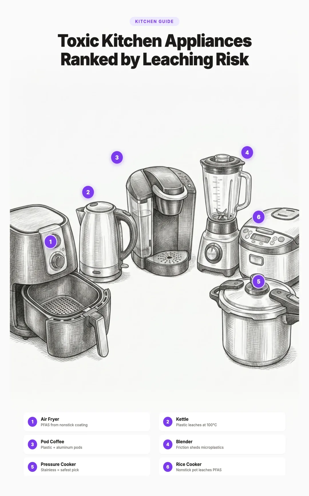

The Most (and Least) Toxic Kitchen Appliances, Ranked by How Much They Leach Into Your Food

Why Your Appliances Matter More Than Your Cookware
If you have ever upgraded your cookware, you have done the visible work. The invisible work is on your countertop: the appliances sitting next to your stove and tucked into your cabinets. Even kitchens with perfect cookware often have a blender, a kettle, or a coffee maker quietly leaching chemicals into every meal.
Cookware gets all the attention because it sits directly on a heat source. But many kitchen appliances combine higher temperatures, longer contact times, and more plastic in the food path than a pan ever does. An air fryer basket typically runs at 180 to 205°C (350 to 400°F) for 20 to 40 minutes, with some models maxing out around 230°C (450°F). A slow cooker holds food against a plastic gasket lid for 8 hours. A pod coffee maker forces near boiling water through a plastic and aluminum capsule every single morning.
The difference is visibility. You can see a scratched pan and know it is time to replace it. The plastic interior of your electric kettle, the nonstick coating inside your rice cooker, the polymer tube that water travels through inside your coffee machine: these are hidden from view. And because you cannot see them, you do not think about them.
Heat, mechanical agitation, and prolonged contact accelerate chemical migration far beyond what static room temperature storage produces. Kitchen appliances with plastic food contact surfaces combine all three at once, which is why the same plastic that is essentially inert in a sealed container becomes a meaningful source of leaching when used inside a blender jar, kettle, or coffee maker.
This guide ranks the most common kitchen appliances and setups by how much they actually leach into your food, based on published migration data, the materials in their food contact surfaces, the temperatures they operate at, and the duration of contact. We also provide specific safer alternatives at two price points for each category.
The Three Exposure Pathways: Heat, Friction, and Contact Time
Chemical migration from any surface into food depends on three factors, and kitchen appliances often combine all three at levels higher than cookware.
1. Heat
Temperature is the single biggest accelerator of chemical migration. Polymers and nonstick coatings release more chemicals as temperature rises. PTFE (Teflon) begins to degrade above 260°C (500°F), releasing PFAS compounds and polymer fragments. BPA migration from polycarbonate increases significantly at temperatures above 70°C, with studies showing exponential increases as temperature rises (EFSA, 2023). Plastic food contact surfaces that are "safe" at room temperature can become significant sources of contamination at cooking temperatures.
2. Friction
Mechanical agitation, blending, grinding, and spinning physically break down surface materials and release particles into food. A blender blade spinning at 20,000+ RPM creates enormous shearing force against plastic jar walls. Food processor bowls experience repeated scraping from metal blades. Air fryer baskets endure constant tumbling of food against coated surfaces. Friction generates localized heat that compounds the temperature effect.
3. Contact Time
The longer food stays in contact with a surface, the more chemicals migrate. This is why a slow cooker (8+ hours of contact) can be a bigger exposure source than a toaster (2 minutes of contact). Coffee that brews through a plastic tube in 30 seconds carries fewer migrants than coffee that sits in a plastic reservoir for an hour. Contact time also compounds with acidic, fatty, or salty foods, which pull chemicals from surfaces more aggressively.
The appliances that rank worst in this guide all share one trait: they combine high heat, mechanical friction, and extended contact time simultaneously. A nonstick air fryer, for example, subjects a coated surface to 180 to 205°C (and up to 230°C on max settings) for 30+ minutes while food tumbles constantly against it. That is the highest risk scenario for chemical migration.
What Actually Leaches: The Six Chemical Families
Not every chemical in a kitchen appliance is a concern. Here are the six families that research has linked to meaningful health effects at realistic kitchen exposure levels.
- PFAS (per and polyfluoroalkyl substances): Found in nonstick coatings (PTFE/Teflon). Linked to cancer, thyroid disease, immune suppression, and reproductive harm. Called "forever chemicals" because they do not break down in the body or environment (NIH overview). Present in most air fryer baskets and nonstick rice cooker pots.
- BPA/BPS (bisphenol A and S): Found in polycarbonate plastics and epoxy linings. Endocrine disruptors that mimic estrogen. "BPA free" products often contain BPS, which has similar effects. Common in plastic blender jars, food processor bowls, electric kettle interiors, and coffee maker reservoirs. See our deep dive on why BPA free is not safe.
- Phthalates: Plasticizers used to make plastic flexible. Endocrine disruptors linked to reproductive harm, obesity, and developmental problems. Found in plastic gaskets, seals, tubing, and flexible plastic components in many small appliances. Our guide on avoiding BPA and phthalates covers this in detail.
- Melamine: Used in some slow cooker and rice cooker lids and plastic bowls. Migrates into food at elevated temperatures, especially with acidic foods. Linked to kidney damage at sustained exposure levels.
- Nonstick polymer fragments: Physical particles that shed from degrading PTFE and ceramic coatings. A 2022 Flinders University study found a single surface crack in a Teflon coated pan can release approximately 9,100 plastic particles. Air fryer baskets, which endure higher temperatures and more mechanical stress than flat pans, degrade faster.
- Heavy metals (aluminum, lead, cadmium): Aluminum migrates from uncoated aluminum cooking surfaces, especially with acidic foods. Lead can be present in ceramic glazes on imported slow cooker crocks. Cadmium has been found in colored ceramic glazes. Most concerning in slow cookers and cheap imported appliances.
How We Ranked: Our Methodology
We evaluated each appliance across four dimensions and assigned a tier from A (safest) to F (retire this).
| Factor | What We Looked At | Why It Matters |
|---|---|---|
| Contact Surface Material | What the food actually touches: stainless steel, glass, plastic, nonstick coating, ceramic, aluminum | The material determines which chemicals can migrate |
| Operating Temperature | Maximum temperature the food contact surface reaches during normal use | Higher temperatures accelerate migration exponentially |
| Duration of Contact | How long food or liquid remains in contact with the surface during typical use | Longer contact means more time for chemicals to migrate |
| Published Migration Data | Peer reviewed studies measuring actual chemical migration from the appliance type | Real data beats theoretical risk |
We also considered whether safer versions of each appliance are widely available and affordable. An appliance that is inherently risky but has no practical safer alternative is different from one where a simple swap eliminates the concern.
The Ranking at a Glance
| Tier | Appliance | Primary Contact Material | Max Temp | Known Migrants |
|---|---|---|---|---|
| F | Nonstick air fryers | PTFE coated aluminum | 200°C (some 230°C) | PFAS, polymer fragments |
| F | Plastic bowl food processors & blenders | Polycarbonate/Tritan plastic | 60°C+ (friction) | BPA/BPS, phthalates, microplastics |
| F | Single serve pod coffee makers | Plastic reservoir + aluminum/plastic pod | 90°C+ | BPA/BPS, phthalates, aluminum, microplastics |
| F | Nonstick sheet pans & bakeware | PTFE coated aluminum/steel | 230°C+ | PFAS, polymer fragments |
| D | Electric kettles (plastic interior) | Polypropylene/polycarbonate | 100°C | BPA/BPS, microplastics |
| D | Rice cookers (nonstick pot) | PTFE coated aluminum | 160°C+ | PFAS, polymer fragments |
| D | Slow cookers | Ceramic crock + plastic gasket lid | 100°C | Lead/cadmium (glazes), phthalates (gasket) |
| C | Stand mixers | Stainless steel bowl (standard) | Room temp | Minimal (check attachments) |
| D | Toaster ovens & mini ovens (nonstick interior) | PTFE coated aluminum walls | 230°C+ | PFAS, polymer fragments |
| C | Toaster ovens & mini ovens (stainless interior) | Stainless walls + metal racks | 230°C+ | Minimal with stainless interior |
| C | Immersion blenders | Varies: stainless or plastic wand | 80°C+ (in hot foods) | BPA/BPS (plastic wand only) |
| B | Pop up toasters (stainless interior) | Metal grates, exposed elements | 230°C+ | VOCs from plastic housing (new only) |
| B | Food dehydrators | Stainless trays (best models) | 70°C | Minimal with stainless trays |
| B | Induction cooktops | Glass ceramic (no food contact) | N/A (pan dependent) | None from cooktop itself |
| A | Stovetop pressure cookers | Stainless steel | 120°C | Trace Ni/Cr within safe limits |
| A | Pour over & French press | Glass/stainless/ceramic | 95°C | None |
| A | Cast iron & carbon steel | Iron/steel | Any | Dietary iron (beneficial) |
| A | Manual lever espresso | Stainless steel chamber | 95°C | None (silicone gasket only) |
Tier F Retire or Replace
These appliances have the highest chemical leaching risk due to a combination of problematic materials, extreme temperatures, and prolonged or repeated contact. If you replace only three things in your kitchen, start here.
F1. Non Toxic Air Fryer Alternatives (and Why Most Air Fryers Fail)
Air fryers have exploded in popularity, but most use PTFE (Teflon) coated baskets that operate at 180 to 205°C (350 to 400°F), with some max settings reaching 230°C (450°F). PTFE coatings begin to decompose around 260°C (500°F), but consumer testing has documented PFAS migration well below that threshold, especially as the coating ages, scratches, or flakes. The combination of a coated surface, repeat heat cycling, and food friction is the actual problem, not just peak temperature.
The problem is worse in air fryers than in flat nonstick pans for two reasons. First, the basket geometry means food is in constant tumbling contact with the coating, creating friction that accelerates surface degradation. Second, the small enclosed cooking chamber concentrates any off gassing. Research on PTFE degradation indicates that the combination of higher surface area, mechanical agitation, and convection airflow in air fryers accelerates coating breakdown compared to flat pan cooking at the same temperature.
Basket coatings also degrade faster than flat pan coatings because they are more difficult to clean gently, the basket shape catches food residue, and the frequent high heat cycling accelerates coating breakdown. Most air fryer baskets show visible coating damage within 12 to 18 months of regular use.
We looked hard for a consumer basket air fryer with verified all stainless steel food contact surfaces. We could not find one that holds up to scrutiny. Many brands marketed as "stainless steel" use galvanized steel interiors, chrome plated racks, or enameled iron trays when you contact the manufacturer directly. Ceramic coated models eliminate PTFE but the coating still degrades with use. Many popular "stainless" countertop ovens (including the Breville Smart Oven Air Fryer line) actually have nonstick coated interiors despite the marketing. See our toaster oven and mini oven section for the full breakdown of which countertop ovens are genuinely clean.
Your Existing Oven + a Stainless Steel Air Fryer Basket Insert
The most affordable non toxic air frying setup is a stainless steel mesh air fryer basket that sits inside your regular oven. Set your oven to 220°C (425°F) with convection if available. The results are slightly less crisp than a dedicated air fryer but the food contact is 100% stainless steel. At $15 to $30 for the basket, this is the cheapest swap on the list.
Price: $15 to $30
- Verified stainless steel food contact
- Extremely affordable
- No new countertop appliance needed
- Works in any standard oven
- Slower than a dedicated air fryer (larger air volume)
- Slightly less crispy results without convection
- Requires preheating the full oven
Fritaire Pro 9 in 1 Glass Air Fryer
Fritaire is the cleanest mainstream basket air fryer we have evaluated. The cooking chamber is tempered glass, and the rotisserie, tumbler, and air stand accessories are 304 stainless steel. Food contact surfaces are free of PTFE, PFOA, PFAS, and BPA, which solves the failure mode of every other air fryer in this category. The glass bowl lets you watch food cook without opening the unit, which reduces the temptation to keep poking. Honest disclosure: a small internal component uses food grade PPS plastic rated to 500°F, and the unit operates at 400°F. The PPS is not in the food path, but it does exist inside the appliance. The self cleaning function uses water, soap, and air circulation, so wipe and rinse the glass after a self clean cycle to make sure no soap residue remains before the next cook. Capacity suits a household of one to three; larger families cooking proteins for the week may find it small.
Price: $199 to $249
- Tempered glass cooking bowl, no coatings
- 304 stainless steel accessories
- No PTFE, PFOA, PFAS, or BPA in food contact surfaces
- Glass bowl allows visual monitoring during cooking
- Internal PPS plastic component (not in food path)
- Smaller capacity, less suited to large families
- Glass bowl is hand wash only
- Self cleaning cycle uses soap; rinse the glass after to clear residue
Ninja Crispi (Looks Clean, Has a Caveat)
Ninja Crispi launched in late 2024 and Ninja Crispi Pro followed in 2025. Both use borosilicate glass containers, which is why they are widely marketed as the "non toxic" alternative to standard nonstick basket air fryers. The catch is the crisper plate. Per Ninja's own materials disclosure, the crisper plate is aluminum with a nano ceramic coating. That is the same coating chemistry the FAQ at the bottom of this guide flags as a long term degradation concern: ceramic sol gel coatings degrade over 1 to 3 years of use and may eventually expose the aluminum substrate. So the Crispi is a real improvement over a PTFE basket, but it is not on Fritaire's level out of the box.
The clean upgrade: third party 304 stainless steel replacement racks for the Ninja Crispi are available on Amazon. Swapping the ceramic coated crisper plate for a stainless rack turns the Crispi into a genuinely clean glass and stainless setup at a lower price point than Fritaire. If you already own a Crispi or are choosing between the two, the Crispi + stainless rack swap is the most cost effective path to a clean glass air fryer.
Price: $130 to $200 (Crispi) + $15 to $25 (stainless rack)
- Borosilicate glass cooking container
- Cheaper than Fritaire
- Stainless rack swap is a verified, low cost upgrade
- Stock crisper plate is ceramic coated aluminum
- Requires the third party rack swap to be a fully clean setup
Other glass air fryers we evaluated: Granitestone 16 Qt, Boswell, Tevolux, and Airmsen all sell glass bowl air fryers. We could not verify their crisper plate materials (most disclosures are vague or absent), so we are not recommending them. If you are considering one, contact the manufacturer to confirm the crisper plate is uncoated stainless before buying.
F2. Non Toxic Blender and Food Processor Options
Most popular food processors and blenders use polycarbonate or Tritan plastic jars. When a blade spins at 15,000 to 30,000 RPM inside a plastic container, two things happen. First, friction between the blade, food, and container walls generates localized heat, sometimes exceeding 60°C in as little as 60 seconds of continuous blending. This accelerates BPA and phthalate migration from the plastic. Second, the mechanical shearing action physically grinds microscopic particles off the container walls.
A 2020 Trinity College Dublin study (Li et al., Nature Food) found that polypropylene infant feeding bottles released up to 16 million microplastic particles per liter during formula preparation with heated water at 70°C. The study measured sterilization and formula prep rather than blending, but it established that heated water in contact with polypropylene releases microplastics at scale. The mechanical principle in a blender is more aggressive: high speed blades physically erode the container surface under both heat and friction simultaneously.
Hot blending (making soups, sauces, or heated beverages in a blender) compounds the problem dramatically. Pouring hot liquid into a plastic container and then blending it creates the worst case scenario: high temperature plus friction plus extended contact time.
Vitamix Stainless Steel Container (48 oz)
A stainless steel blending container that fits existing Vitamix bases. This is for existing Vitamix owners only: the container retails around $250 and you need a Vitamix motor base ($400+) to use it. If you already own one, swapping the plastic jar for stainless is the simplest upgrade for hot soups and sauces. Honest disclosure: the lid and tamper are Eastman Tritan copolymer (a BPA free plastic, though Tritan uses BPS and other bisphenol analogues that some readers want to avoid). They contact food at the top of the jar during blending. The majority of the food contact surface is stainless, but this is not a 100% plastic free solution.
Price: $250 (container only, requires a Vitamix base)
- Stainless steel walls and blade assembly
- Dramatically reduces plastic food contact vs standard jar
- Fits existing Vitamix bases
- Extremely durable
- Lid and tamper are still plastic
- Cannot see contents while blending
- Requires a Vitamix base ($400+) to use
- Heavier than plastic
Oster Pro 1200 Smoothie Blender with Glass Jar
A blender with a borosilicate glass jar instead of plastic. The glass jar does not leach any chemicals regardless of temperature, making it safe for hot soups and sauces. Includes a 24 ounce smoothie cup for single servings. A good mid range option that keeps the main blending container glass. Honest note: the lid and smoothie cup are plastic. The glass jar is where most food contact happens during blending, but the lid does touch food. The smoothie cup is plastic, so use the glass jar for hot liquids.
Price: $70 to $90
- Glass jar for main blending
- Safe for hot soups and sauces
- Affordable compared to Vitamix
- Includes smoothie cup for single servings
- Lid and smoothie cup are plastic
- Glass jar is heavier than plastic
- Less powerful motor than premium blenders
F3. Non Toxic Coffee Maker Alternatives (and the Pod Problem)
Pod coffee makers are a triple threat. Near boiling water (90°C+) is forced at pressure through a small plastic and aluminum pod, then travels through plastic tubing and a plastic reservoir before reaching your cup. Every surface the water touches between the machine and your mug is a potential leaching source.
The pods themselves are composites of aluminum foil, a plastic ring, and a plastic lined interior. When pressurized near boiling water passes through this composite, it extracts compounds from every layer. Research on coffee pod systems has found elevated concentrations of bisphenols, phthalates, and aluminum in pod brewed coffee compared to coffee prepared with glass or metal pour over methods, consistent with what you would expect from forcing near boiling water through a plastic and aluminum composite.
The internal plumbing of most pod machines adds another layer of concern. Water sits in a plastic reservoir (sometimes for hours), travels through plastic tubes, and passes through a plastic brew chamber. Over time, biofilm and mineral deposits accumulate inside these tubes, creating additional surfaces for chemical interaction. For a detailed look at plastic free coffee brewing, see our guide to enjoying coffee without plastic.
Hario V60 Drip Coffee Pour Over
A ceramic pour over dripper with zero plastic in the food path. Water passes through a ceramic cone and paper filter directly into your mug or carafe. No electricity, no tubing, no reservoir. The only things that touch your coffee are ceramic, paper, and glass or stainless steel (whatever you brew into).
Price: $20 to $30
- Ceramic dripper, zero plastic food contact
- Extremely affordable
- Filters are cheap and widely available
- Compact, easy to store and travel with
- Manual process, takes 3 to 4 minutes
- Requires a separate kettle to heat water
- Brews one to two cups at a time
Most drip coffee machines have hot water (93°C+) flowing through plastic components for the entire brew cycle. The problem areas are plastic water reservoirs (where water sits for hours or days before heating), plastic internal tubing (continuous hot water contact), plastic brew baskets and showerheads (direct contact with near boiling water), and sometimes plastic carafes. Even BPA free plastics can leach BPS, BPF, and antimony over time, especially with heat and mineral rich water.
The cleanest electric drip options, ranked:
- Ratio Six or Ratio Eight ($300 to $500). Glass carafe, stainless steel water path with no plastic tubing in the heated water route, borosilicate brew basket. This is the gold standard for low tox drip. Expensive but genuinely clean.
What to skip entirely: Keurig (plastic everywhere plus plastic pods), Mr. Coffee, Black+Decker, Hamilton Beach, most Cuisinart drip machines. Standard pod machines are the worst case scenario for plastic contact.
If zero hot plastic contact in drip coffee matters to you, the only honest answer is a manual setup: a stainless steel electric kettle paired with a Hario V60. Total cost: $60 to $220 depending on the kettle. Total plastic in the coffee path: zero.
What about espresso machines? Espresso machines actually tend to have less plastic in the water path than drip machines because the pressures and temperatures require metal components. The cleanest prosumer options (Profitec, ECM, Rocket, $1,500 to $3,000+) use stainless steel or brass water paths with copper boilers. Most consumer machines under $300 (Breville Bambino, DeLonghi automatics, Nespresso) use plastic water tanks and internal tubing. The cleanest espresso option overall is a manual lever machine like the Flair 58 ($475 to $550), which has zero plastic in the water path.
Honest caveats for all espresso machines: every machine has a silicone or EPDM gasket in the group head that touches hot water. There is no way around this. Descaling also matters: mineral buildup creates micro pockets where degradation accelerates. And brass group heads contain trace lead (under 0.25% in modern alloys), though the amount that dissolves during a shot is well below regulatory thresholds. Flush the first shot of the day if this concerns you.
How to check your espresso machine: remove the water tank. If it is plastic, the machine has plastic in the water path. Check the spec sheet for "boiler material." If it says stainless steel and the water path is metal, you are in good shape. If the spec sheet does not mention boiler material, assume plastic.
The complete coffee and espresso hierarchy, cleanest to worst:
- Manual pour over (Hario V60) + gooseneck kettle
- Manual lever espresso (Flair 58)
- Cleanest electric drip (Ratio Six or Eight)
- Prosumer espresso (Profitec, ECM, Rocket)
- Mid tier pump espresso with brass boiler (Gaggia Classic Pro E24)
- Consumer espresso with plastic tank (Breville Bambino, mid range DeLonghi)
- Standard drip machines (Mr. Coffee, Hamilton Beach, Cuisinart)
- Pod machines (Keurig, Nespresso). Worst case.
Gaggia Classic Pro E24 (Brass Boiler Version)
If a manual lever like the Flair 58 is not realistic, the Gaggia Classic Pro E24 is the strongest traditional pump option under $600. The heated path is brass (boiler, group head) and stainless steel (portafilter, body, steam wand). The tank and cold water tubing are plastic and silicone, but once water enters the heated path it only contacts brass and stainless. That is a meaningful step up from sub $300 machines (Breville Bambino, mid range DeLonghi, Nespresso), which use plastic throughout. Critical buying note: confirm "brass boiler" or "E24" in the product description. The older Classic Evo Pro uses an aluminum boiler, and the 2023 batch had a non stick coating that flaked into coffee. Buy direct from Gaggia or Whole Latte Love.
A note on lead in brass boilers. A 2025 hobbyist test of one E24 unit reported elevated lead in brew water from the brass boiler. The result has not been independently replicated, and no major coffee outlet has run a controlled study on this specific machine. That said, all brass boiler espresso machines (including prosumer Profitec, ECM, and Rocket) share this potential concern, since "lead free" brass under US standards still allows up to 0.25% lead. If lead exposure is a primary concern, the Flair 58 manual lever is the cleanest realistic option (no boiler, no brass in the heated water path). If you do choose the E24 or any pump espresso machine with a brass boiler, run several flushes during the break in period (the first 20 to 30 shots) and discard them, and continue flushing the first shot of the day.
Price: $499 to $549
- Brass boiler and brass group head (heated water path is metal)
- Stainless steel body, portafilter, and steam wand
- Lead free brass alloy
- Highly repairable, parts widely available
- Made in Italy
- Plastic water reservoir and silicone tubing on cold water side
- Three nearly identical versions sold under similar names; verify boiler material before buying
- Silicone group head gasket contacts hot water (unavoidable in any pump espresso machine)
- Premium price for entry into prosumer espresso
Coffee Grinder: TIMEMORE C3S (Manual)
Whether you brew pour over or espresso, you also need a grinder, and grinders are an underrated source of plastic in the coffee path. Most consumer electric grinders use plastic burr housings, plastic catch bins, and plastic chutes that the freshly ground coffee tumbles through. The TIMEMORE C3S is a manual grinder with a stainless steel burr set and an all metal grind path. Coffee contacts steel and a small amount of glass (the catch jar on some models), with no plastic in the grind path. Honest disclosure: the exterior body has some plastic and rubber components, but the grind chamber, burrs, and chute are metal. For an electric option with a clean grind path, the Baratza Encore is the most commonly recommended; it has a stainless burr set but a plastic chute and bin. The C3S is the cleaner pick if you do not mind hand grinding 20 to 40 grams at a time.
Price: $70 to $90 (TIMEMORE C3S) · $170 to $200 (Baratza Encore, electric alternative)
- Stainless steel burrs and metal grind path
- No plastic in coffee contact surfaces
- Affordable, durable, no electronics to fail
- Works for pour over and espresso (with stepless adjustment on some models)
- Manual operation (slower than electric)
- Exterior body has some plastic and rubber
- Best suited for single batches, not large quantities
F4. Nonstick Sheet Pans and Bakeware
Most sheet pans sold as "nonstick" are carbon steel or aluminum with a PTFE coating, the same chemistry used in traditional nonstick pans. Sheet pans routinely hit 200 to 230°C (400 to 450°F) during roasting, which is within the temperature range where PTFE coatings begin to degrade. The problem is compounded by what sheet pans are used for: sticky marinades, sugary glazes, and fatty proteins that cling to the coating and pull particles loose when you scrape food off. Metal spatulas accelerate the damage. Within 12 to 24 months of regular use, most coated sheet pans show visible scratches, discoloration, or flaking. If you can see lighter metal showing through the dark coating, PFAS compounds are actively entering your food.
"Nonstick" muffin tins, cake pans, and loaf pans share the same concern. The coating story is identical: PTFE or ceramic sol gel sprayed over aluminum, operating at oven temperatures, degrading with time.
Skip this: any sheet pan, muffin tin, or bakeware labeled "nonstick," "Teflon," "PFOA free" (see marketing terms above), or with a dark sprayed coating over a silver metal substrate. Brands to avoid for bakeware include most AmazonBasics, Farberware nonstick, and budget nonstick sets under $30.
Wildone Stainless Steel Baking Sheet Set
A set of 18/0 food grade stainless steel sheet pans with no coating. The entire food contact surface is bare stainless. Use with unbleached parchment paper for anything sticky. Honest note: 18/0 contains no nickel, which is a benefit if anyone in your household has a nickel sensitivity, though it is a slightly less corrosion resistant grade than 18/8 or 18/10. For dry heat bakeware this difference does not matter in practice.
Price: $30 to $45
- 18/0 food grade stainless steel, zero coating
- Nickel free (suitable for nickel sensitive users)
- Dishwasher safe without degradation
- Budget friendly
- Food sticks without parchment paper or oil
- 18/0 is lower grade than 18/8 or 18/10 (minimal practical difference for bakeware)
- Thinner gauge than commercial pans
Tier D Use With Serious Caution
These appliances are not as immediately concerning as Tier F, but they contain materials that leach at meaningful levels under normal use. Safer alternatives exist and are worth the upgrade.
D1. Non Toxic Electric Kettles (and Why Plastic Interiors Are a Problem)
Many popular electric kettles use polypropylene or polycarbonate for the interior chamber, the lid, or the water level window. When water is heated to 100°C in a plastic vessel, BPA, BPS, and microplastic migration increases sharply. Research has consistently shown that boiling water in plastic vessels releases large quantities of microplastic particles. A widely cited 2019 study on polypropylene baby bottles found that sterilization and formula preparation released millions of microplastic particles per liter, and the same principle applies to any plastic vessel heated to boiling. Even kettles marketed as "BPA free" often use BPS or other bisphenol alternatives that have similar endocrine disrupting effects.
The water level indicator window is an often overlooked weak point. Even in kettles with stainless steel interiors, a plastic window panel means boiling water is in constant contact with plastic along that strip. Over time, the sealant around the window can degrade, creating additional leaching surfaces.
Fellow Stagg EKG Electric Kettle
A stainless steel interior kettle with a verified 304 stainless steel water path. The interior, spout, and lid interior are all stainless. Variable temperature control and a gooseneck spout make it ideal for pour over coffee and tea. Honest disclosure: the lid has a plastic ring component and the handle is plastic. Neither contacts the water during normal use, but steam does pass near the lid ring. The water path itself is fully stainless.
Price: $170 to $195
- 304 stainless steel interior, water path is plastic free
- Variable temperature control
- Hold temperature feature
- Precision gooseneck spout
- Plastic lid ring and handle (do not contact water)
- Smaller capacity (0.9L)
- Premium price for a kettle
Cosori Gooseneck Electric Kettle (Mid Tier Pick)
The middle ground between the Stagg EKG and a basic stovetop kettle. The Cosori gooseneck has a stainless steel interior and spout with variable temperature control, at roughly half the price of the Stagg. The pour profile is precise enough for pour over coffee. Honest disclosure: as with the Stagg, the lid has a plastic ring and the exterior handle is plastic, but the water path itself is stainless. A stovetop alternative in this price range is the Hario Buono, a fully stainless gooseneck stovetop kettle with no electronics ($55 to $85).
Price: $50 to $90 (Cosori electric) · $55 to $85 (Hario Buono stovetop)
- Stainless steel interior water path
- Variable temperature control (Cosori) or no electronics (Buono)
- Gooseneck spout for pour over precision
- Roughly half the price of the Stagg
- Plastic lid ring and handle on the Cosori (do not contact water)
- Buono requires a stovetop, no auto shutoff
Stainless Steel Stovetop Whistling Kettle (Budget Pick)
The cleanest budget option is a simple stovetop kettle. A basic stainless steel whistling kettle has no electronics, no plastic components, and no hidden water level windows. The entire water path is steel. You lose the convenience of electric (no auto shutoff, no keep warm), but you gain complete certainty about materials. That is the right trade at this price point. Many budget electric kettles marketed as "stainless steel" have plastic lids, spout interiors, or water level windows that are not obvious from product photos. A stovetop kettle has none of those ambiguities.
Price: $20 to $40
- 100% stainless steel water contact, no ambiguity
- No electronics to fail
- Very affordable
- Lasts decades
- No auto shutoff (must listen for whistle)
- No variable temperature control
- Requires a stovetop
D2. Non Toxic Rice Cookers (and the Nonstick Inner Pot Problem)
Most rice cookers use PTFE (Teflon) coated aluminum inner pots. While rice cookers operate at lower temperatures than air fryers (around 100°C during cooking, up to 160°C during the initial heating phase), the contact time is significant: 20 to 45 minutes of active cooking followed by hours on a "keep warm" setting, during which food sits against the nonstick surface at 60 to 80°C.
Rice is also mildly starchy and sticky, which means it presses tightly against the coating surface and can pull coating particles loose as you scoop it out. Over time, the inner pot develops scratches and wear marks. If you can see the silver aluminum showing through the dark nonstick layer, PFAS compounds are actively entering your food.
Stovetop Stainless Steel Rice Pot (Best Option)
The simplest and cleanest solution: cook rice on the stove in a stainless steel pot with a tight fitting stainless steel lid. The absorption method (1:1.5 rice to water ratio, bring to a boil, reduce to low for 15 minutes, rest for 10) produces perfect rice without any electronics or coatings. A heavy bottomed stainless pot distributes heat evenly and prevents burning. This is our primary recommendation for this category.
Price: $25 to $60
- 100% stainless steel, zero chemical concern
- No electronics to fail
- Budget friendly
- Multi purpose (use for grains, pasta, soups)
- Requires attention (not set and forget)
- No keep warm function
- Slight learning curve for perfect rice
If you need the convenience of an electric rice cooker, finding one with a verified stainless steel inner pot is harder than it should be. Most rice cookers, including premium brands like Zojirushi and Tiger, use nonstick coatings with marketing names like "platinum infused" or "diamond coated." A few models have offered stainless clad inner pots in certain markets, but availability is inconsistent. Before buying, contact the manufacturer directly and ask specifically: "Is the inner cooking pot stainless steel, or does it have any coating?" Do not rely on product listings alone. If you cannot verify the inner pot material, the stovetop method above is the safer choice.
D3. Slow Cookers
Slow cookers present a unique combination of concerns. The ceramic crock itself is generally safe, but two common issues affect many models. First, cheap or imported ceramic crocks may contain lead or cadmium in the glaze. This is especially common in off brand slow cookers and older models. Lead leaches more aggressively into acidic foods (tomato based stews, chili, wine braised dishes) at sustained temperatures over long cooking times.
Second, most slow cooker lids use a plastic gasket or silicone seal around the rim. This gasket sits in constant contact with steam and condensation at 80 to 100°C for 4 to 10 hours per use. Phthalates and other plasticizers can migrate from the gasket into the condensation that drips back onto the food.
Third, some budget slow cookers use plastic handles on the ceramic crock or plastic knobs on the lid that get hot enough during cooking to off gas.
Lodge Enameled Cast Iron Dutch Oven
An enameled cast iron Dutch oven does everything a slow cooker does, in the oven or on the stovetop, with minimal chemical concerns. Lodge states that their enameled cookware tests below the California Prop 65 warning thresholds for lead and cadmium and meets FDA food contact requirements. For slow cooking, place it in the oven at 120°C (250°F) for 4 to 8 hours. No plastic gaskets, no questionable glazes. Honest note: independent testers have found trace lead in some Lodge enameled products, though well within FDA limits. For the lowest possible levels, Le Creuset and Staub have tested even lower in independent reviews. All three brands are dramatically safer than a slow cooker with a questionable ceramic glaze.
Price: $80 to $120 (Lodge) · $250 to $400 (Le Creuset, Staub)
- Enameled cast iron, tests below Prop 65 lead and cadmium thresholds
- Works on stovetop and in oven
- No plastic anywhere
- Lifetime durability
- Very heavy
- Requires an oven or stovetop (no countertop convenience)
- No programmable timer
Replacing Your Slow Cooker Crock With a Stainless Steel Insert
If you already own a slow cooker and the appliance still works, you do not need to buy a new one to address the ceramic glaze and plastic gasket concerns. A stainless steel insert that fits inside your existing slow cooker base eliminates the lead and cadmium risk from questionable ceramic glazes and gives you a fully metal food contact surface. Several brands now make stainless steel replacement crocks for popular slow cooker sizes (most commonly 6 quart and 8 quart Crock Pot models). The insert sits inside the heating element shell exactly like the original ceramic crock, so the appliance functions normally. Honest caveats: stainless steel conducts heat differently than ceramic, so cooking times may need slight adjustment (typically 30 to 60 minutes shorter on low). The lid gasket on your existing slow cooker is still plastic or silicone, and steam still passes over it during cooking. To address this fully, replace the lid with a glass lid that fits your model, or transfer to a Lodge enameled Dutch oven for the cleanest setup. The stainless insert is a budget friendly intermediate step that resolves the highest risk component (the food contact surface) without replacing the whole appliance.
Price: $50 to $90 (verify fitment with your specific slow cooker model before ordering)
- Eliminates lead and cadmium risk from ceramic glaze
- Uses your existing slow cooker base
- Fully stainless steel food contact
- Significantly cheaper than replacing the entire appliance
- Cooking times may need adjustment (typically slightly faster than ceramic)
- Does not address the lid gasket (consider a glass lid replacement)
- Fitment varies by slow cooker model; measure carefully
Tier C Okay With the Right Model
These appliances can be safe depending on the specific model. The default version often has plastic in the food path, but widely available versions eliminate the concern. Check what yours is made of.
C1. Stand Mixers
The standard KitchenAid style stand mixer comes with a stainless steel bowl, which is excellent. Food touches the stainless bowl and metal beater attachments, so the core mixing function is largely safe. The concern is with plastic splash guards, plastic coated paddle attachments, and plastic pour shields that sit directly over the food.
If your mixer came with a plastic pouring shield, you can simply remove it. For the flex edge beater (the kind with a flexible scraping edge), check whether the scraping element is silicone or plastic. Silicone is food grade and generally safe. Hard plastic scrapers that come into repeated friction contact with food are more concerning. When in doubt, stick with the standard all metal flat beater and whisk.
KitchenAid Artisan Tilt Head Stand Mixer (Stainless Bowl)
The standard KitchenAid Artisan (tilt head model) with the stainless steel bowl. Use with the dough hook and wire whisk, which are metal. Honest note: the "flat beater" on many current KitchenAid models is coated cast aluminum with a "burnished" finish, not solid stainless steel. Some newer models include a ceramic coated beater instead. The fix: third party stainless steel flex edge beater replacements (typically $20 to $35) drop into the same socket as the stock beater and put a fully metal flat beater in the food path. Pair with a stainless steel pouring shield ($15 to $25) instead of the plastic one that ships with the mixer. Both swaps are low cost and resolve the only meaningful plastic touchpoints in this appliance.
Price: $330 to $400
- Stainless steel bowl standard
- Metal attachments available
- Extremely durable, repairable
- Plastic pour shield included by default
- Some specialty attachments have plastic components
C2. Toaster Ovens and Mini Ovens
Toaster ovens and mini ovens (sometimes called countertop ovens) are a different category from pop up toasters and deserve to be treated separately. The naming is confusing, and manufacturers use the terms interchangeably, but the function is the same: a countertop appliance that bakes, broils, and often air fries at full oven temperatures inside a small cavity.
The core concern with this category is the interior. A small cooking cavity running at 200 to 230°C+ concentrates heat and food splatter in a small space. When the interior walls are nonstick coated (as they are on most popular models including the Breville Smart Oven, Ninja Foodi, and many Calphalon and Cuisinart models), you have the same PTFE + high heat + food contact combination as a nonstick air fryer, just slightly spread out. The air fryer function makes it worse: high velocity 400°F+ air circulating across coated surfaces accelerates coating degradation.
Full size ovens are usually safer than mini ovens. A built in oven typically has a porcelain enamel interior (glass bonded to steel, inert and non reactive). Most countertop ovens cut costs by using nonstick coated aluminum or steel interiors instead.
- Fully stainless steel or porcelain enamel interior walls (not "stainless style" exterior with a coated interior)
- Uncoated stainless steel racks (chrome plated racks are common and will flake with age)
- Uncoated metal crumb trays and drip pans
Any toaster oven or mini oven with a nonstick coated interior. The Breville Smart Oven Air Fryer line has nonstick coated interior walls despite marketing as "stainless." The Calphalon quartz heat countertop ovens, Ninja Foodi countertop ovens, and most Cuisinart air fryer toaster ovens all use coated interiors. Read spec sheets carefully, and if materials are not clearly documented, assume coated.
Lotus Professional Series The Perfectionist Oven
A premium countertop oven with a stainless steel interior and no nonstick coatings in the food path. Designed for precision cooking with convection, bake, broil, toast, and air fry functions. The interior is fully stainless steel rather than the nonstick coated aluminum found in most countertop ovens. This is the "buy once" pick in this category for readers who want a dedicated countertop oven with clean materials.
Price: $899.95
- Stainless steel interior, no nonstick coatings
- Precision temperature control
- Multi function (convection, air fry, broil, toast)
- Premium build quality
- Premium price
- Only available through Williams Sonoma
- Large footprint
After extensive research, the Lotus Perfectionist is the only countertop oven we found with a truly clean interior at every contact point. Every other model we evaluated, including popular options from Cuisinart, Breville, Ninja, and Calphalon, uses nonstick coatings, chrome plated racks, or both. If the Lotus price point is not realistic for you, the honest answer is below.
If your home has a standard built in oven with a porcelain enamel interior (most do), you already have the cleanest cooking cavity available. For occasional small batch baking, reheating, or air frying, using your main oven with a stainless steel rack or basket insert is the cleanest approach and costs nothing extra.
C3. Immersion Blenders
Immersion (stick) blenders come in two varieties: those with a stainless steel wand and blade guard, and those with a plastic wand and blade guard. The difference matters enormously because immersion blenders are frequently used in hot soups, sauces, and stews.
A stainless steel wand immersed in a pot of 90°C soup presents zero leaching risk. A plastic wand in the same scenario releases BPA/BPS and microplastics. The fix is straightforward: buy a model with a stainless steel wand.
All Clad Stainless Steel Immersion Blender
A stainless steel wand and blade assembly with a powerful motor. The blade and wand shaft are stainless steel. Honest disclosure: the collar where the wand meets the motor housing has a plastic ring component, but this sits above the food line during normal use. In practical terms, the part immersed in your soup or sauce is metal. Particularly well suited for hot liquids where a fully plastic wand would be most problematic.
Price: $80 to $120
- Stainless steel blade and wand (immersed portion)
- Powerful motor
- Safe for use in hot liquids
- Plastic collar at top (above food line)
- Heavier than plastic models
- Higher price than basic models
Tier B Generally Low Risk
These appliances are generally safe by design, with minimal or no food contact concerns. Minor caveats exist but do not warrant urgent replacement.
B1. Pop Up Toasters
Pop up toasters are one of the lowest risk electric appliances in your kitchen. Bread sits briefly (2 to 4 minutes) on exposed metal grates with air gaps on both sides. There is no nonstick coating in the food path on most models, no plastic contact with food, and no reservoir holding water or oil. The short contact time and minimal surface area make migration negligible.
The real concerns, in order of importance:
- Plastic housing off gassing, especially when new. All plastic bodied toasters release VOCs when first heated. Run the toaster empty on high heat 3 to 5 times in a well ventilated kitchen before using it with food. Low level off gassing continues throughout a plastic bodied toaster's lifespan whenever plastic components near the heating elements get hot. For long term use, a stainless bodied toaster is the cleaner choice.
- Nonstick coatings on some models. Not universal, but some budget toasters use PTFE on crumb trays or interior reflectors. Avoid any toaster that advertises "nonstick" or "easy clean" interior surfaces.
- Heating element construction. Cheaper toasters use exposed nichrome or chrome plated elements insulated by mica sheets. Mica can contain trace heavy metals, and chrome plating can flake with age. Premium toasters (Dualit is the known example) encase heating elements in armored stainless steel, eliminating any element to food particle contact.
Dualit Classic 2 Slice Toaster
The cleanest pop up toaster on the market. Stainless steel housing, stainless steel interior, and ProHeat heating elements fully encased in armored stainless steel (no exposed mica or chrome plating in the food path). Made in the UK since 1952. Fully repairable: heating elements, timers, and internal components are all user replaceable, so the appliance can last decades. Used in commercial kitchens worldwide.
Price: $280 to $350
- Stainless steel housing and interior, no nonstick
- Heating elements encased in stainless (no exposed elements)
- Fully repairable, parts available directly from Dualit
- Mechanical timer, no electronics to fail
- Manual eject (no auto pop up on classic models)
- Higher upfront cost than standard toasters
- Runs hot; short learning curve for timing
If the Dualit is out of budget, a basic stainless steel toaster from Cuisinart, KitchenAid, or similar brands is a reasonable middle ground ($50 to $120). Verify the interior is not coated and that the crumb tray is uncoated metal. The meaningful upgrade over a $30 Hamilton Beach is modest; the real leap is the Dualit.
B2. Food Dehydrators
Food dehydrators operate at low temperatures (typically 35 to 70°C) and use warm air circulation to remove moisture. At these temperatures, chemical migration from any surface is minimal. The main variable is the tray material.
Models with stainless steel trays are the safest option. Models with BPA free plastic trays are acceptable at dehydrator temperatures because the heat is low enough that meaningful migration does not occur. The one exception: if you are dehydrating very acidic foods (like tomatoes or fruit leathers) on plastic trays, the combination of acid and mild heat over 8 to 24 hours could cause slight migration. Stainless steel trays or unbleached parchment paper liners eliminate this edge case.
Excalibur Stainless Steel Dehydrator
Excalibur is the gold standard for food dehydrators. They sell both BPA free plastic tray models and stainless steel tray models. The stainless tray version is what you want, but it costs more than the plastic version. Verify you are ordering the stainless steel tray model specifically, as the plastic tray version is often the default listing. Horizontal airflow for even drying, adjustable temperature control, and a time tested design.
Price: $300 to $450 (stainless steel tray model, verify current pricing as Excalibur's prices change frequently)
- Stainless steel trays
- Even horizontal airflow
- Large capacity
- Adjustable temperature
- Large footprint
- Premium price
B3. Induction Cooktops
Induction cooktops deserve a place on this list because they are often confused with other cooking appliances. The cooktop itself has zero food contact: food sits in a separate pan on top of a glass ceramic surface. The induction element creates a magnetic field that heats the pan directly. Nothing from the cooktop migrates into food.
The important caveat is that your pan choice matters entirely. An induction cooktop paired with a PTFE coated pan still exposes you to PFAS. Paired with cast iron, stainless steel, or carbon steel, an induction cooktop is one of the safest cooking setups possible. For a full guide to choosing safe cookware, see our cast iron vs stainless steel vs ceramic cookware comparison.
Tier A Safest by Design
These setups have no meaningful chemical leaching risk. The materials they use are inert, time tested, and inherently safe for food contact at any temperature.
A1. Stovetop Pressure Cookers (Stainless Steel)
A stainless steel stovetop pressure cooker is one of the safest ways to cook food. The entire food contact surface is 18/10 or 18/8 stainless steel. There are no electronics in the food path, no nonstick coatings, and no plastic components that touch food. The lid seal is typically silicone, which is food grade and safe at pressure cooker temperatures (up to 120°C).
Pressure cooking also has a nutritional advantage: the sealed environment and shorter cooking times preserve more vitamins and minerals than open pot cooking.
Note: electric pressure cookers (like the Instant Pot) are a different story. Many use nonstick coated inner pots (same concern as nonstick rice cookers) and have plastic or silicone gaskets in the lid. The good news for the tens of millions of Instant Pot owners is that Instant Pot sells a stainless steel inner pot directly ($30 to $40 for the 6 quart, around $40 to $50 for the 8 quart) that drops into the existing base. Swapping the coated pot for the stainless one is the highest value upgrade in this category and resolves the food contact concern without replacing the appliance. The lid gasket is still silicone, but at pressure cooker temperatures (up to 120°C) silicone is generally considered food safe.
Fissler Vitaquick Pressure Cooker
German engineered 18/10 stainless steel with an encapsulated base for even heat distribution. All stainless food contact surfaces, precision pressure valve, and a design that has been refined over decades. The silicone gasket is the only non metal component (check the Fissler website for replacement gasket availability for your specific model).
Price: $200 to $300
- Full 18/10 stainless steel construction
- No electronics, no coatings
- Extremely durable (lifetime product)
- Precise pressure regulation
- Requires stovetop (not countertop convenience)
- Learning curve for pressure cooking
- Premium price
Presto Stainless Steel Pressure Cooker
A budget friendly American made stainless steel pressure cooker. Simple, reliable, and fully stainless steel food contact. Has been manufactured in the same basic design for decades.
Price: $50 to $80
- Stainless steel construction
- Very affordable
- Simple, proven design
- American made
- Less refined pressure regulation than premium models
- Thinner walls than Fissler
A2. Manual Pour Over and French Press Setups
A glass, ceramic, or stainless steel pour over dripper and a glass or stainless carafe create the cleanest coffee brewing path possible. Water touches only glass, ceramic, metal, and a paper or metal filter. No plastic, no tubing, no reservoirs, no pods.
A glass French press is equally clean: borosilicate glass beaker, stainless steel plunger and filter, and no plastic in the food path. Some French press models have plastic handles or plastic plunger frames. These are not in direct contact with the coffee, so the risk is minimal, but all stainless and glass models are available if you prefer to eliminate plastic entirely.
Both methods also produce excellent coffee. Pour over is clean and bright; French press is rich and full bodied. Neither requires electricity, and both last virtually forever.
Hario V60 Ceramic Pour Over Dripper
A ceramic pour over dripper that produces clean, nuanced coffee. The ceramic body retains heat during brewing and contains zero plastic. Uses widely available, inexpensive #02 cone filters. A minimalist setup: dripper, filter, and any mug or carafe you already own.
Price: $20 to $30
- Ceramic, zero leaching risk
- Extremely affordable
- Filters are cheap and widely available
- Compact, easy to store
- Brews one serving at a time
- Requires pour technique for best results
- Ceramic can chip if dropped
Frieling Double Wall Stainless Steel French Press
An all stainless steel French press with double wall insulation. No glass to break, no plastic in the food path. The double wall keeps coffee hot for significantly longer than a glass French press. The stainless steel filter and plunger are dishwasher safe. Frieling has historically used 18/10 (304) stainless steel; confirm this is still the case on the current model when you order. This is the buy it for life French press.
Price: $80 to $110
- 100% stainless steel, zero plastic
- Double wall insulation keeps coffee hot
- Virtually indestructible
- No filters to buy
- Cannot see coffee level inside
- Heavier than glass models
- Higher price than basic French presses
A3. Cast Iron and Carbon Steel on Any Heat Source
Cast iron and carbon steel are the gold standard for safe cooking surfaces. They contain no coatings, no polymers, no synthetic chemicals. The only thing that leaches from cast iron is dietary iron, which is generally considered beneficial (most people do not get enough iron). Carbon steel behaves the same way.
Seasoned cast iron develops a natural polymerized oil layer that provides nonstick properties without any synthetic coating. This seasoning layer is made from food grade cooking oil and is completely safe. For a detailed breakdown, see our complete cookware comparison.
Cast iron and carbon steel work on gas, electric, induction, open fire, grill, and oven. They last generations. A well maintained cast iron skillet from the 1800s works exactly the same as it did when it was made. No kitchen appliance can match that longevity or that safety record.
Lodge 12" Cast Iron Skillet
The single most recommended piece of cookware on this site. Pre seasoned, American made, and virtually indestructible. Sears meat, bakes cornbread, goes from stovetop to oven to campfire. If you buy one piece of non toxic cookware, make it this one.
Price: $25 to $35
- Zero chemical leaching (only dietary iron)
- Pre seasoned and ready to use
- Lifetime (multi generational) durability
- Incredibly affordable
- Heavy
- Requires seasoning maintenance
- Not ideal for long cooked acidic foods
A4. Manual Lever Espresso Machines
If you want espresso with zero plastic in the water path, manual lever machines are the cleanest option by a wide margin. You heat water in your stainless steel kettle, pour it directly into a metal chamber, and pull a lever to force it through the coffee at pressure. No electronics, no plastic tubing, no reservoir. The entire water path is metal.
Flair 58 Manual Lever Espresso
A manual lever espresso press with a stainless steel brew head and portafilter. You pour hot water from your kettle directly into the metal chamber. No electronics, no plastic water path. Produces genuine espresso with a full crema. The 58mm portafilter uses standard commercial baskets.
Price: $475 to $550
- Zero plastic in the water path
- No electronics to fail
- True espresso pressure (6 to 9 bar)
- Standard 58mm commercial portafilter
- Manual process, requires technique
- No steam wand for milk
- One shot at a time
Are Microwaves Safe? The Container Is the Problem, Not the Appliance
The microwave itself is not the problem. Microwaves use non ionizing radiation to heat water molecules in food. This radiation does not change the food's chemistry, does not make food "radioactive," and does not leach anything from the microwave's interior walls. The WHO and every major health authority confirms that microwave ovens are safe.
The problem is what you put inside the microwave. Heating food in plastic containers, plastic wrap, or styrofoam dramatically accelerates chemical migration. A 2023 University of Nebraska study (Hussain et al., Environmental Science & Technology) found that microwaving polypropylene and polyethylene food containers released billions of nanoplastics and millions of microplastics per square centimeter of container surface over a three minute test period. The combination of microwave energy and heat causes significantly more particle release than conventional heating at the same temperature.
- Always use glass or ceramic containers. Borosilicate glass (like Pyrex) and plain ceramic (no metallic decoration) are completely microwave safe and leach nothing.
- Never heat food in plastic containers, even if they are labeled "microwave safe." That label means the container will not melt, not that it will not leach chemicals.
- Never cover food with plastic wrap in the microwave. Use a ceramic plate, a glass lid, or a paper towel instead.
- Remove food from plastic takeout containers before reheating. Transfer to glass or ceramic first.
For safe microwave containers, see our guide to plastic free food storage containers.
Dishwashers and Plastic Degradation: The Hidden Accelerator
Dishwashers do not cook food, but they play a role in how quickly your plastic kitchen items degrade. Running plastic containers, plastic cutting boards, and other plastic kitchen items through a dishwasher exposes them to high heat (55 to 75°C) and aggressive detergents for extended cycles. This accelerates surface degradation and increases the amount of chemicals those items release during their next use with food.
Every dishwasher cycle ages a plastic container faster than hand washing would. The combination of heat, alkaline detergent, and water jet pressure physically roughens the plastic surface over time, creating more microscopic cracks and surface area for chemicals to migrate from during food storage and reheating.
If you still use plastic food containers, hand wash them in cool water to slow degradation. If you have switched to glass or stainless steel, dishwashing is not a concern. For cutting boards, see our guide to non toxic cutting boards.
What to Do if You Cannot Replace Everything Tomorrow
Replacing every appliance at once is not realistic for most households. Here is how to prioritize for maximum impact with minimum spending.
The 80/20 List: Three Appliances to Prioritize
Your Daily Coffee Maker
If you drink coffee every day, your coffee maker is your highest frequency plastic exposure point: 365 contact events per year. A Hario V60 pour over costs $20 to $30 and eliminates plastic from the coffee path entirely. This is the highest impact, lowest cost swap on the list.
Your Nonstick Air Fryer (if You Use One Regularly)
If you air fry three or more times per week, the combination of extreme heat and degrading nonstick coating makes this your highest intensity exposure source. There is no truly verified all stainless basket air fryer on the market yet. The cleanest approach is a stainless steel basket insert in your existing oven, or a countertop oven with a verified stainless or porcelain enamel interior (see our toaster oven section for specific picks). If you air fry rarely, this can wait.
Your Electric Kettle (if It Has Plastic Inside)
Boiling water in plastic is one of the most efficient ways to extract chemicals from that plastic. If your kettle has any plastic in the water path (interior, lid, window), this is a high return swap. A stainless steel stovetop kettle starts at $20 and gives you complete certainty about materials.
Harm Reduction Tactics (While You Save Up for Replacements)
If you cannot replace an appliance right now, these tactics reduce exposure meaningfully:
- Let things cool before adding food. If your blender or food processor has a plastic jar, blend at room temperature whenever possible. Avoid pouring hot liquids into plastic containers.
- Avoid acidic foods in compromised surfaces. Acidic foods (tomatoes, citrus, vinegar based marinades) pull chemicals from plastic and degraded coatings more aggressively than neutral foods. Use stainless or glass for acidic preparations.
- Replace gaskets and baskets before the whole appliance. Many appliances sell replacement parts. A new silicone gasket for your slow cooker lid costs $10. A new air fryer basket (if a stainless option exists for your model) costs $20 to $40. You do not always need to replace the entire appliance.
- Reduce contact time. Do not leave food sitting in appliances after cooking is complete. Remove rice from the cooker, transfer slow cooker contents to glass storage, and pour coffee out of the machine immediately after brewing.
- Use parchment paper as a barrier. Lining your air fryer basket, toaster oven tray, or rice cooker pot with unbleached parchment paper creates a physical barrier between food and the cooking surface. This does not eliminate off gassing but significantly reduces direct contact migration.
What to Look for on the Box
- NSF/ANSI 51 (Food Equipment Materials): Means the materials have been tested for food contact safety. A meaningful standard.
- EU Food Contact (Regulation 1935/2004): European food contact standards, generally stricter than FDA. Look for the glass and fork symbol.
- California Prop 65 compliant (no warning): If a product is sold in California without a Prop 65 warning, it has been tested below California's thresholds for chemicals of concern.
- "BPA free": Often just means BPS or BPF was used instead. Not a guarantee of safety. See our full breakdown.
- "Food grade plastic": Means the plastic is approved for food contact at room temperature. Says nothing about behavior at cooking temperatures.
- "Non toxic": Not a regulated term. Any manufacturer can claim it with no testing required.
- "PFOA free": PFOA was phased out industry wide by 2015. Saying a product is PFOA free in 2026 is like advertising a car as "lead free gasoline compatible." The replacement chemicals (GenX, PFHxA) may be just as harmful.
- "Green" or "eco friendly": Unregulated terms. May refer to packaging, manufacturing, or nothing at all.
We dig into specific brand claims in more detail in our product reviews. If a label sounds too good to be true, it usually is.
The Non Toxic Kitchen Starter Set
If you are setting up a kitchen from scratch or doing a full overhaul, here is a complete set organized by budget.
Budget Tier (Under $400 Total)
| Function | Pick | Approx. Price |
|---|---|---|
| Coffee | Hario V60 ceramic pour over | $25 |
| Kettle | Stainless steel stovetop kettle | $25 |
| Cookware | Lodge 12" cast iron skillet + Tramontina Tri Ply Clad 18/10 stainless set | $30 + $100 |
| Rice / grains | Cook on stovetop in stainless pot (included above) | $0 |
| Blending | Stainless wand immersion blender | $35 |
| Slow cooking | Lodge enameled Dutch oven | $80 |
| Food storage | Pyrex glass container set | $30 |
| Cutting board | Hardwood cutting board | $30 |
| Total | ~$355 |
Investment Tier (Under $1,200 Total)
| Function | Pick | Approx. Price |
|---|---|---|
| Coffee | Hario V60 ceramic pour over (kettle does double duty) | $25 |
| Kettle | Fellow Stagg EKG | $185 |
| Cookware | Lodge cast iron skillet + All Clad D3 stainless set | $30 + $300 |
| Blending | Vitamix stainless steel container | $250 |
| Manual brew backup | Frieling stainless French press | $90 |
| Pressure cooking | Fissler Vitaquick | $250 |
| Total | ~$1,130 |
FAQ
Yes, with two exceptions. Stainless steel is one of the safest food contact materials available. It can leach trace amounts of nickel and chromium when cooking acidic foods (tomato sauce, citrus, vinegar) for extended periods, but the amounts are well within safe limits established by the WHO and FDA. The two exceptions: if you have a diagnosed nickel allergy, use nickel free 18/0 stainless steel instead of the standard 18/10 grade. And avoid unbranded stainless steel from unknown manufacturers, which may not meet 304 or 316 grade specifications. For more detail, see our cookware comparison guide.
Yes, in the sense that they are PTFE and PFAS free, which eliminates the main chemical concern with conventional nonstick air fryers. However, ceramic sol gel coatings degrade over time (typically 1 to 3 years of regular use) and may expose the aluminum substrate underneath. A stainless steel basket air fryer is the safest long term option because there is no coating to wear off. If you choose ceramic coated, plan to replace the basket every 1 to 2 years.
European small appliances often use more glass and stainless steel in food contact surfaces, partly due to stricter EU chemical regulations (EU Food Contact Regulation 1935/2004). Brands like Zwilling, Bosch, Sage (Breville in Europe), and Smeg tend to minimize plastic in the food path. European certification is generally more restrictive than US FDA guidelines. That said, always check the specific model. "European brand" does not automatically mean "no plastic in the food path."
The microwave itself does not leach anything. Microwaves use non ionizing radiation to heat water molecules, which is safe. The concern is entirely about the container. Heating food in plastic containers releases BPA, phthalates, and billions of nanoplastic particles per use. Always microwave in glass or ceramic. Remove food from plastic takeout containers before reheating. Never use plastic wrap in the microwave. Our food storage container guide recommends specific glass and ceramic options.
Stainless Steel Leaches Nickel and Chromium into Foods (PMC)
BPA and BPS Migration from Polycarbonate Under Thermal Stress (PMC, 2021)
Teflon Coating Flaking Particles Study (Flinders University, 2022)
EFSA Re evaluation of BPA: 20,000x Lower Safe Intake (EFSA, 2023)
PFAS Release from Nonstick Cookware at High Temperatures (PMC, 2022)
Microwave Ovens Safety (WHO)
Lead and Cadmium in Ceramic Glazed Cookware (PMC, 2021)
Assessing Leaching of Potentially Hazardous Elements from Cookware (PMC, 2023)
UNC Study: Cookware Contributes to PFAS Exposure (NC Health News, 2025)
Related Articles
- Cast Iron vs Stainless Steel vs Ceramic Cookware
The complete 2026 comparison of PFAS free cookware materials for your kitchen. - How to Enjoy Coffee Without Plastic
Every step of the coffee process, from beans to cup, without plastic contamination. - BPA Free Is Not Safe
Why BPA free labels are misleading and what to do instead. - Best Plastic Free Food Storage Containers
Glass, stainless steel, and silicone containers compared for safety and durability. - How to Avoid BPA and Phthalates in Everyday Products
A room by room guide to reducing harmful chemical exposure at home. - How to Start Reducing Plastic Exposure
A practical priority guide for reducing plastic in your daily routine.